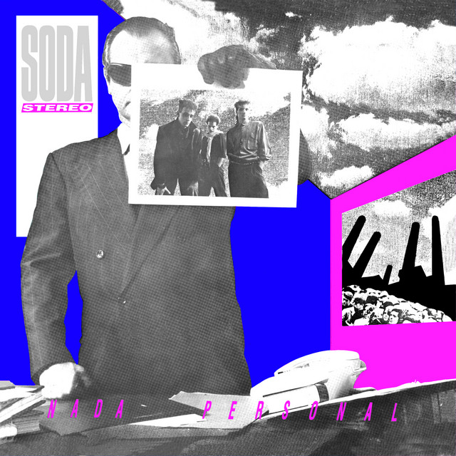

Nada Personal
1985

Concepto
Contexto. Su segundo álbum salió en noviembre de 1985, producido por la propia banda y grabado en Estudios Moebio, en Buenos Aires.
Qué representa. Habla de relaciones frías y mediadas por la imagen. La canción que le da título funciona como manifiesto del disco.
Sonido. Más sintetizadores y atmósfera, con una dirección claramente inspirada en el new wave británico. Los sencillos más exitosos fueron “Juegos de seducción”, “Nada personal” y “Cuando pase el temblor”.
Qué buscaba. Un sonido propio, más elegante y más maduro que el del debut.
Por qué importa. Fue su puerta de entrada al resto de América Latina y el inicio de la llamada Sodamanía.
Canciones
- 01Nada personal
- 02Si no fuera por…
- 03Cuando pase el temblor
- 04Danza rota
- 05El cuerpo del delito
- 06Juegos de seducción
- 07Estoy azulado
- 08Observándonos (Satélites)
- 09Imágenes retro
- 10Ecos